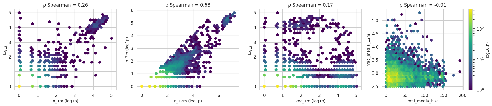
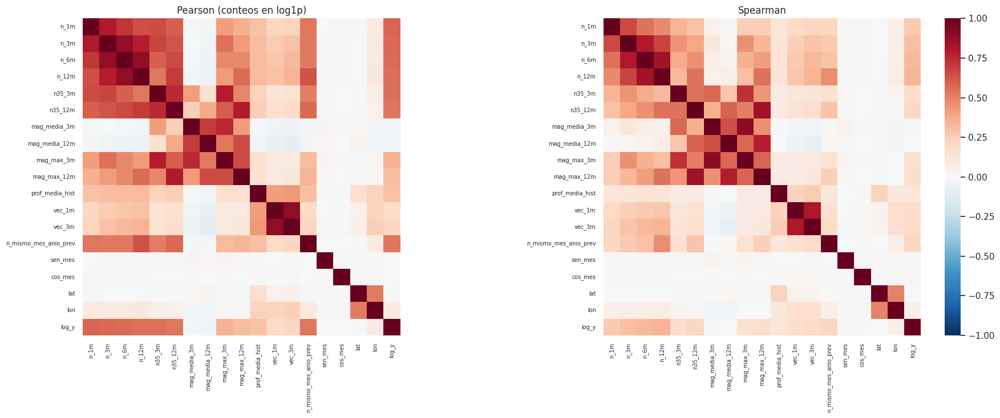
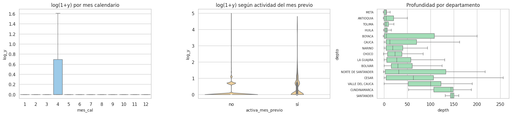
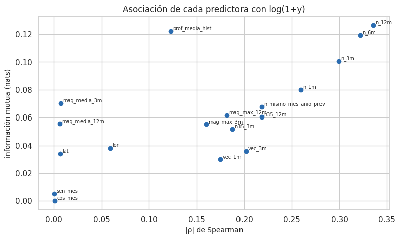
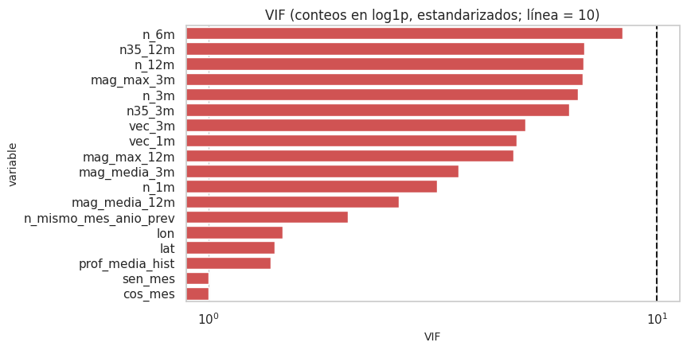

5. Análisis bivariado (2.3)#
Todo con el entrenamiento. Con decenas de miles de filas casi cualquier diferencia es significativa, así que cada prueba se acompaña de un tamaño de efecto (ρ, ε², r biserial, V de Cramér) y los p-valores se corrigen por comparaciones múltiples (Holm o Benjamini-Hochberg).
# Datos de entrenamiento y versión con conteos en log1p para el análisis bivariado
from sklearn.feature_selection import mutual_info_regression
ev_, X, info, tr, gp, te = datos.panel_completo()
P = datos.panel_dataframe(X, info, tr)
fin_tr = datos.fecha_de_mes(info["m_test"] - cfg.GAP_MESES)[0]
cat_tr = ev_[ev_.time < fin_tr].copy()
conteos = [c for c in X.columns if c.startswith(("n_", "n35", "vec", "n_mismo"))]
L = P.copy()
L[conteos] = np.log1p(L[conteos])
5.1 Numéricas vs numéricas: dispersión y correlación#
# Diagramas hexbin de los pares de variables más relevantes
fig, axes = plt.subplots(1, 4, figsize=(18, 4))
pares = [("n_1m", "log_y"), ("n_12m", "n_3m"), ("vec_1m", "log_y"), ("prof_media_hist", "mag_media_12m")]
for ax, (a, b) in zip(axes, pares):
d = L[[a, b]].dropna()
hb = ax.hexbin(d[a], d[b], gridsize=35, bins="log", cmap="viridis", mincnt=1)
ax.set_xlabel(a + (" (log1p)" if a in conteos else "")); ax.set_ylabel(b + (" (log1p)" if b in conteos else ""))
ax.set_title(f"ρ Spearman = {es(stats.spearmanr(d[a], d[b])[0], 2)}")
plt.colorbar(hb, ax=axes[-1], label="log10(n)")
plt.tight_layout(); eda.guardar_figura(fig, "05_hexbin.png"); plt.show()

# Matrices de correlación de Pearson (conteos en log1p) y Spearman
cols = list(X.columns) + ["log_y"]
pear = L[cols].corr(method="pearson")
spear = L[cols].corr(method="spearman")
eda.guardar_tabla(spear.reset_index(), "correlacion_spearman.csv")
fig, axes = plt.subplots(1, 2, figsize=(19, 7.5))
for ax, M, t in ((axes[0], pear, "Pearson (conteos en log1p)"), (axes[1], spear, "Spearman")):
sns.heatmap(M, cmap="RdBu_r", vmin=-1, vmax=1, ax=ax, cbar=ax is axes[1], square=True, xticklabels=True, yticklabels=True)
ax.set_title(t); ax.tick_params(labelsize=7)
plt.tight_layout(); eda.guardar_figura(fig, "05_correlaciones.png"); plt.show()
alto = (spear.where(np.triu(np.ones(spear.shape, bool), 1)).stack().rename("rho").reset_index()
.rename(columns={"level_0": "var_1", "level_1": "var_2"}))
alto = alto[alto.rho.abs() >= 0.8].sort_values("rho", key=np.abs, ascending=False)
alto.round(3)

| var_1 | var_2 | rho | |
|---|---|---|---|
| 94 | mag_media_3m | mag_max_3m | 0.897 |
| 83 | n35_12m | mag_max_12m | 0.847 |
| 35 | n_6m | n_12m | 0.837 |
| 143 | vec_1m | vec_3m | 0.810 |
| 18 | n_3m | n_6m | 0.803 |
md(f"""**Interpretación.**
- **Bloques redundantes.** Hay {len(alto)} pares con |ρ| ≥ 0,8, todos dentro de bloques que miden lo mismo a distintas escalas:
- los conteos de la propia celda (`n_1m` … `n_12m`, `n35_*`);
- los de la vecindad (`vec_1m`, `vec_3m`);
- las magnitudes de ventana (media y máxima).
- **Relación con el objetivo.** Es **monótona pero no lineal**: en el hexbin la nube de `n_1m` contra log(1 + y) tiene forma de
embudo, con mucha masa en (0, 0) y una relación casi lineal solo en las celdas activas. Por eso Spearman y Pearson-en-log
difieren poco y ambos son adecuados.
- **Redundancia.** Se cuantifica con el VIF (sección 5.5).""")
Interpretación.
Bloques redundantes. Hay 5 pares con |ρ| ≥ 0,8, todos dentro de bloques que miden lo mismo a distintas escalas:
los conteos de la propia celda (
n_1m…n_12m,n35_*);los de la vecindad (
vec_1m,vec_3m);las magnitudes de ventana (media y máxima).
Relación con el objetivo. Es monótona pero no lineal: en el hexbin la nube de
n_1mcontra log(1 + y) tiene forma de embudo, con mucha masa en (0, 0) y una relación casi lineal solo en las celdas activas. Por eso Spearman y Pearson-en-log difieren poco y ambos son adecuados.Redundancia. Se cuantifica con el VIF (sección 5.5).
5.2 Categóricas vs numéricas: comparación entre grupos#
Objetivo según el mes calendario. ¿Hay estacionalidad? Prueba de Kruskal-Wallis con su tamaño de efecto ε².
Objetivo según si la celda tuvo actividad el mes anterior (
n_1m> 0). Prueba de Mann-Whitney con su tamaño de efecto: la correlación biserial de rangos.Magnitud y profundidad según el departamento (en el catálogo). Kruskal-Wallis con ε².
Se usan pruebas no paramétricas porque ninguna variable es normal (capítulo 4).
# Objetivo frente a variables categóricas: Kruskal-Wallis / Mann-Whitney con tamaño del efecto y corrección de Holm
P["mes_cal"] = P.fecha_obj.dt.month
P["activa_mes_previo"] = np.where(P.n_1m > 0, "sí", "no")
deps = cat_tr.depto.value_counts()
deps = deps[deps >= 200].index
filas = []
g = [grp.y.to_numpy() for _, grp in P.groupby("mes_cal")]
h, p = stats.kruskal(*g); filas.append(("y ~ mes calendario", "Kruskal-Wallis", h, p, "ε²", eda.epsilon_cuadrado(h, len(P))))
a, b = P.loc[P.n_1m > 0, "y"], P.loc[P.n_1m == 0, "y"]
u, p = stats.mannwhitneyu(a, b); filas.append(("y ~ celda activa el mes previo", "Mann-Whitney", u, p, "r biserial", -eda.biserial_rangos(u, len(a), len(b))))
for v in ("mag", "depth"):
g = [cat_tr.loc[cat_tr.depto == d, v].to_numpy() for d in deps]
h, p = stats.kruskal(*g); filas.append((f"{v} ~ departamento ({len(deps)} con ≥ 200 sismos)", "Kruskal-Wallis", h, p, "ε²", eda.epsilon_cuadrado(h, sum(map(len, g)))))
grupos = pd.DataFrame(filas, columns=["relación", "prueba", "estadístico", "p", "efecto", "tamaño"])
grupos["p_Holm"] = eda.holm(grupos.p)
eda.guardar_tabla(grupos, "comparacion_grupos.csv")
fig, axes = plt.subplots(1, 3, figsize=(18, 4.2))
sns.boxplot(data=P, x="mes_cal", y="log_y", ax=axes[0], color="#90cdf4", showfliers=False); axes[0].set_title("log(1+y) por mes calendario")
sns.violinplot(data=P, x="activa_mes_previo", y="log_y", ax=axes[1], color="#fbd38d", cut=0); axes[1].set_title("log(1+y) según actividad del mes previo")
orden = cat_tr[cat_tr.depto.isin(deps)].groupby("depto").depth.median().sort_values().index
sns.boxplot(data=cat_tr[cat_tr.depto.isin(deps)], y="depto", x="depth", order=orden, ax=axes[2], color="#9ae6b4", showfliers=False)
axes[2].set_title("Profundidad por departamento"); axes[2].tick_params(axis="y", labelsize=7)
plt.tight_layout(); eda.guardar_figura(fig, "05_grupos.png"); plt.show()
grupos.round(4)

| relación | prueba | estadístico | p | efecto | tamaño | p_Holm | |
|---|---|---|---|---|---|---|---|
| 0 | y ~ mes calendario | Kruskal-Wallis | 1.409550e+01 | 0.2278 | ε² | 0.0005 | 0.2278 |
| 1 | y ~ celda activa el mes previo | Mann-Whitney | 1.074868e+08 | 0.0000 | r biserial | 0.2382 | 0.0000 |
| 2 | mag ~ departamento (15 con ≥ 200 sismos) | Kruskal-Wallis | 1.487251e+02 | 0.0000 | ε² | 0.0052 | 0.0000 |
| 3 | depth ~ departamento (15 con ≥ 200 sismos) | Kruskal-Wallis | 1.778912e+04 | 0.0000 | ε² | 0.6262 | 0.0000 |
gr = grupos.set_index("relación")
md(f"""**Interpretación.**
- **Mes calendario.** No es significativo (p de Holm = {p_fmt(gr.iloc[0]['p_Holm'])}) y el efecto es **despreciable**
(ε² = {es(gr.iloc[0]['tamaño'], 4)}): no hay estacionalidad en el conteo.
- **Actividad del mes previo.** Efecto **moderado** (biserial de rangos = {es(gr.iloc[1]['tamaño'], 2)}): las celdas que tuvieron sismos el mes
anterior tienden a tener más el mes siguiente. Es la **persistencia** que explotan las líneas base y los modelos.
- **Departamento.** Explica una parte grande de la profundidad (ε² = {es(gr.iloc[3]['tamaño'], 2)}): Santander concentra los sismos
intermedios del nido y la costa pacífica los superficiales. La magnitud, en cambio, difiere poco entre departamentos
(ε² = {es(gr.iloc[2]['tamaño'], 3)}).
- **Lectura conjunta.** Estos resultados ilustran la advertencia del enunciado: la magnitud por departamento tiene un p-valor
minúsculo pero un efecto irrelevante. Solo dos efectos (actividad previa y profundidad por departamento) importan en la práctica.""")
Interpretación.
Mes calendario. No es significativo (p de Holm = 0,228) y el efecto es despreciable (ε² = 0,0005): no hay estacionalidad en el conteo.
Actividad del mes previo. Efecto moderado (biserial de rangos = 0,24): las celdas que tuvieron sismos el mes anterior tienden a tener más el mes siguiente. Es la persistencia que explotan las líneas base y los modelos.
Departamento. Explica una parte grande de la profundidad (ε² = 0,63): Santander concentra los sismos intermedios del nido y la costa pacífica los superficiales. La magnitud, en cambio, difiere poco entre departamentos (ε² = 0,005).
Lectura conjunta. Estos resultados ilustran la advertencia del enunciado: la magnitud por departamento tiene un p-valor minúsculo pero un efecto irrelevante. Solo dos efectos (actividad previa y profundidad por departamento) importan en la práctica.
5.3 Categóricas vs categóricas: contingencia, χ² y V de Cramér#
# Asociación entre categóricas del catálogo: chi-cuadrado y V de Cramér
cat_tr["clase_mag"] = pd.cut(cat_tr.mag, [2.5, 3.0, 3.5, 4.5, 10], right=False, labels=["2,5–3", "3–3,5", "3,5–4,5", "≥ 4,5"])
cat_tr["clase_prof"] = pd.cut(cat_tr.depth, [-10, 30, 70, 300, 800], labels=["superficial < 30", "30–70", "intermedia 70–300", "profunda > 300"])
cat_tr["portal"] = np.where(cat_tr.time < "2018-03-01", "histórico", "actual")
cat_tr["depto_g"] = cat_tr.depto.where(cat_tr.depto.isin(deps), "OTROS")
filas = []
for a, b in (("depto_g", "clase_prof"), ("depto_g", "clase_mag"), ("clase_prof", "clase_mag"), ("portal", "clase_mag")):
v, chi2, p = eda.cramers_v(cat_tr[a], cat_tr[b])
filas.append({"par": f"{a} × {b}", "chi2": chi2, "p": p, "V_Cramer": v})
cc = pd.DataFrame(filas)
cc["p_Holm"] = eda.holm(cc.p)
eda.guardar_tabla(cc, "cramer_pares.csv")
display(pd.crosstab(cat_tr.clase_prof, cat_tr.clase_mag, normalize="index").round(3))
cc.round(4)
| clase_mag | 2,5–3 | 3–3,5 | 3,5–4,5 | ≥ 4,5 |
|---|---|---|---|---|
| clase_prof | ||||
| superficial < 30 | 0.632 | 0.238 | 0.117 | 0.013 |
| 30–70 | 0.595 | 0.249 | 0.139 | 0.016 |
| intermedia 70–300 | 0.648 | 0.232 | 0.108 | 0.012 |
| profunda > 300 | 0.500 | 0.000 | 0.250 | 0.250 |
| par | chi2 | p | V_Cramer | p_Holm | |
|---|---|---|---|---|---|
| 0 | depto_g × clase_prof | 25174.0860 | 0.0000 | 0.5341 | 0.0000 |
| 1 | depto_g × clase_mag | 202.3964 | 0.0000 | 0.0423 | 0.0000 |
| 2 | clase_prof × clase_mag | 52.5968 | 0.0000 | 0.0222 | 0.0000 |
| 3 | portal × clase_mag | 14.7253 | 0.0021 | 0.0200 | 0.0021 |
md(f"""**Interpretación.**
- **Departamento × profundidad.** V = {es(cc.V_Cramer[0], 2)}: asociación **fuerte**, que repite el hallazgo anterior (la geografía tectónica
determina la profundidad).
- **Profundidad × magnitud.** V = {es(cc.V_Cramer[2], 2)}: prácticamente independientes. Las proporciones por clase de magnitud son
casi iguales en cada clase de profundidad (tabla de contingencia normalizada por fila). La única fila distinta, «profunda > 300»,
tiene muy pocos sismos.
- **Portal × magnitud.** V = {es(cc.V_Cramer[3], 2)}. Si el cambio de portal hubiera alterado mucho la escala de magnitud, esta
asociación sería grande; su valor bajo apoya que la mezcla de escalas no distorsiona seriamente la distribución de magnitudes
(capítulo 2).""")
Interpretación.
Departamento × profundidad. V = 0,53: asociación fuerte, que repite el hallazgo anterior (la geografía tectónica determina la profundidad).
Profundidad × magnitud. V = 0,02: prácticamente independientes. Las proporciones por clase de magnitud son casi iguales en cada clase de profundidad (tabla de contingencia normalizada por fila). La única fila distinta, «profunda > 300», tiene muy pocos sismos.
Portal × magnitud. V = 0,02. Si el cambio de portal hubiera alterado mucho la escala de magnitud, esta asociación sería grande; su valor bajo apoya que la mezcla de escalas no distorsiona seriamente la distribución de magnitudes (capítulo 2).
5.4 Predictoras vs objetivo: Spearman e información mutua#
La información mutua (MI) captura también relaciones no lineales y no monótonas. Se estima con
mutual_info_regression (k = 3 vecinos) sobre una submuestra de 15.000 filas del entrenamiento.
Las magnitudes faltantes se imputan con la mediana de entrenamiento solo para este cálculo.
# Información mutua (relaciones no lineales) frente a Spearman, sobre una submuestra
sub = L.sample(15000, random_state=cfg.SEMILLA)
Xs = sub[X.columns].fillna(sub[X.columns].median())
mi = mutual_info_regression(Xs, sub.log_y, n_neighbors=3, random_state=cfg.SEMILLA)
rel = []
for c, m_ in zip(X.columns, mi):
d = L[[c, "log_y"]].dropna()
r, p = stats.spearmanr(d[c], d.log_y)
rel.append({"variable": c, "Spearman_rho": r, "p": p, "info_mutua": m_})
rel = pd.DataFrame(rel)
rel["p_FDR"] = eda.fdr_bh(rel.p)
rel = rel.sort_values("info_mutua", ascending=False)
eda.guardar_tabla(rel, "asociacion_objetivo.csv")
fig, ax = plt.subplots(figsize=(9, 5))
ax.scatter(rel.Spearman_rho.abs(), rel.info_mutua, color="#2b6cb0")
for _, r_ in rel.iterrows():
ax.annotate(r_.variable, (abs(r_.Spearman_rho), r_.info_mutua), fontsize=7, xytext=(3, 2), textcoords="offset points")
ax.set_xlabel("|ρ| de Spearman"); ax.set_ylabel("información mutua (nats)"); ax.set_title("Asociación de cada predictora con log(1+y)")
eda.guardar_figura(fig, "05_info_mutua.png"); plt.show()
rel.round(4)

| variable | Spearman_rho | p | info_mutua | p_FDR | |
|---|---|---|---|---|---|
| 3 | n_12m | 0.3360 | 0.0000 | 0.1264 | 0.0000 |
| 10 | prof_media_hist | 0.1223 | 0.0000 | 0.1222 | 0.0000 |
| 2 | n_6m | 0.3221 | 0.0000 | 0.1194 | 0.0000 |
| 1 | n_3m | 0.2993 | 0.0000 | 0.1007 | 0.0000 |
| 0 | n_1m | 0.2593 | 0.0000 | 0.0801 | 0.0000 |
| 6 | mag_media_3m | 0.0074 | 0.3642 | 0.0701 | 0.4098 |
| 13 | n_mismo_mes_anio_prev | 0.2184 | 0.0000 | 0.0676 | 0.0000 |
| 9 | mag_max_12m | 0.1818 | 0.0000 | 0.0616 | 0.0000 |
| 5 | n35_12m | 0.2182 | 0.0000 | 0.0603 | 0.0000 |
| 7 | mag_media_12m | -0.0059 | 0.3384 | 0.0556 | 0.4060 |
| 8 | mag_max_3m | 0.1599 | 0.0000 | 0.0552 | 0.0000 |
| 4 | n35_3m | 0.1874 | 0.0000 | 0.0519 | 0.0000 |
| 17 | lon | 0.0592 | 0.0000 | 0.0380 | 0.0000 |
| 12 | vec_3m | 0.2017 | 0.0000 | 0.0360 | 0.0000 |
| 16 | lat | -0.0067 | 0.2374 | 0.0340 | 0.3053 |
| 11 | vec_1m | 0.1750 | 0.0000 | 0.0300 | 0.0000 |
| 14 | sen_mes | 0.0005 | 0.9272 | 0.0051 | 0.9272 |
| 15 | cos_mes | 0.0009 | 0.8784 | 0.0000 | 0.9272 |
md(f"""**Interpretación.**
- **Ranking por información mutua.** Lo encabezan `{rel.variable.iloc[0]}`, `{rel.variable.iloc[1]}` y `{rel.variable.iloc[2]}`.
- **`lat` y `lon`: relación no lineal.** Tienen información mutua **mayor de lo que sugiere su ρ** (MI de `lon` = {es(rel.set_index('variable').loc['lon', 'info_mutua'], 3)};
|ρ| = {es(abs(rel.set_index('variable').loc['lon', 'Spearman_rho']), 2)}). La relación con la ubicación es no monótona: hay focos aislados, no un
gradiente. Por eso los modelos no lineales (árboles, KNN) pueden aprovecharlas mejor que un modelo lineal.
- **Magnitudes medias.** `mag_media_3m` tiene ρ ≈ 0 pero información mutua apreciable ({es(rel.set_index('variable').loc['mag_media_3m', 'info_mutua'], 3)}).
La información está en **si falta o no** (faltar = no hubo sismos), que la MI capta a través del valor imputado. Es otra razón para
tratar el faltante como estructural (capítulo 10).
- **Calendario.** `sen_mes` y `cos_mes` tienen información mutua ≈ 0, igual que en la sección 5.2.
- **Selección preliminar.** Se conservan las 18 variables para el modelo base: todas son causales y ninguna sobra de forma
evidente. La reducción de redundancia la hacen la regularización (SVR lineal, Ridge/Lasso en el Entregable 2) y el VIF de la
sección siguiente. Las de calendario se mantienen para no descartar a priori una estacionalidad débil, pero se espera que
pesen poco.""")
Interpretación.
Ranking por información mutua. Lo encabezan
n_12m,prof_media_histyn_6m.latylon: relación no lineal. Tienen información mutua mayor de lo que sugiere su ρ (MI delon= 0,038; |ρ| = 0,06). La relación con la ubicación es no monótona: hay focos aislados, no un gradiente. Por eso los modelos no lineales (árboles, KNN) pueden aprovecharlas mejor que un modelo lineal.Magnitudes medias.
mag_media_3mtiene ρ ≈ 0 pero información mutua apreciable (0,070). La información está en si falta o no (faltar = no hubo sismos), que la MI capta a través del valor imputado. Es otra razón para tratar el faltante como estructural (capítulo 10).Calendario.
sen_mesycos_mestienen información mutua ≈ 0, igual que en la sección 5.2.Selección preliminar. Se conservan las 18 variables para el modelo base: todas son causales y ninguna sobra de forma evidente. La reducción de redundancia la hacen la regularización (SVR lineal, Ridge/Lasso en el Entregable 2) y el VIF de la sección siguiente. Las de calendario se mantienen para no descartar a priori una estacionalidad débil, pero se espera que pesen poco.
5.5 Multicolinealidad (VIF)#
# Multicolinealidad: factor de inflación de la varianza (VIF) de las predictoras estandarizadas
Z = L[X.columns].fillna(L[X.columns].median())
Z = (Z - Z.mean()) / Z.std()
v = pd.DataFrame({"variable": X.columns, "VIF": eda.vif(Z.to_numpy())}).sort_values("VIF", ascending=False)
eda.guardar_tabla(v, "vif.csv")
fig, ax = plt.subplots(figsize=(8, 4.5))
sns.barplot(data=v, y="variable", x="VIF", color="#e53e3e", ax=ax); ax.axvline(10, ls="--", c="k"); ax.set_xscale("log")
ax.set_title("VIF (conteos en log1p, estandarizados; línea = 10)")
eda.guardar_figura(fig, "05_vif.png"); plt.show()
v.round(2)

| variable | VIF | |
|---|---|---|
| 2 | n_6m | 8.37 |
| 5 | n35_12m | 6.88 |
| 3 | n_12m | 6.86 |
| 8 | mag_max_3m | 6.82 |
| 1 | n_3m | 6.66 |
| 4 | n35_3m | 6.38 |
| 12 | vec_3m | 5.09 |
| 11 | vec_1m | 4.86 |
| 9 | mag_max_12m | 4.79 |
| 6 | mag_media_3m | 3.61 |
| 0 | n_1m | 3.23 |
| 7 | mag_media_12m | 2.66 |
| 13 | n_mismo_mes_anio_prev | 2.05 |
| 17 | lon | 1.47 |
| 16 | lat | 1.41 |
| 10 | prof_media_hist | 1.38 |
| 14 | sen_mes | 1.00 |
| 15 | cos_mes | 1.00 |
md(f"""**Interpretación.**
- **Ninguna variable supera el umbral habitual de 10.** El máximo es `{v.variable.iloc[0]}` con VIF = {es(v.VIF.iloc[0], 1)}, y
{int((v.VIF > 5).sum())} variables tienen colinealidad moderada (VIF entre 5 y 10).
- **Por qué no se eliminan.** Son ventanas anidadas del mismo conteo: `n_12m` contiene a `n_6m`, que contiene a `n_3m`.
- La colinealidad **no sesga la predicción**; solo hace inestables los coeficientes individuales de un modelo lineal.
- Como el objetivo es pronosticar y no interpretar cada coeficiente, se conservan.
- El modelo base (SVR lineal) incluye regularización L2 a través de C, que estabiliza los coeficientes; su lectura en el
capítulo 11 se hace por bloques y no variable por variable.""")
Interpretación.
Ninguna variable supera el umbral habitual de 10. El máximo es
n_6mcon VIF = 8,4, y 7 variables tienen colinealidad moderada (VIF entre 5 y 10).Por qué no se eliminan. Son ventanas anidadas del mismo conteo:
n_12mcontiene an_6m, que contiene an_3m.La colinealidad no sesga la predicción; solo hace inestables los coeficientes individuales de un modelo lineal.
Como el objetivo es pronosticar y no interpretar cada coeficiente, se conservan.
El modelo base (SVR lineal) incluye regularización L2 a través de C, que estabiliza los coeficientes; su lectura en el capítulo 11 se hace por bloques y no variable por variable.